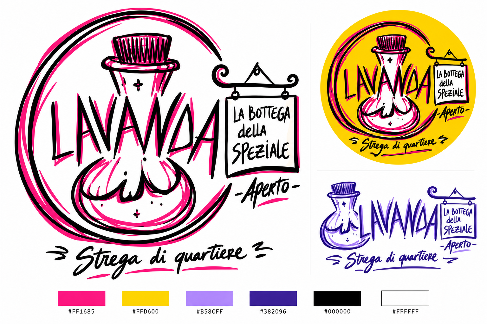
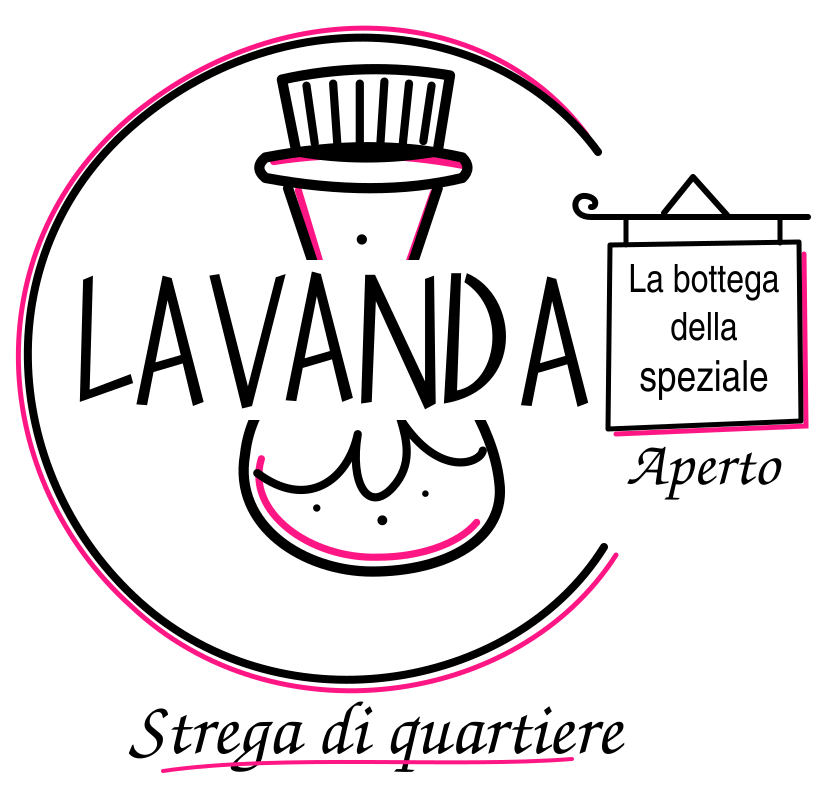
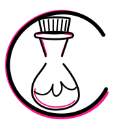

LAVANDA / Studio di identità
Dalla bozza di Martina · Ottobre 2026
La bottega
della speziale.
La bottiglia, il cerchio aperto, il nome e l'insegna: quattro elementi della bozza trasformati in una famiglia di marchi. Il tratto resta personale, il lettering leggibile. La vicinanza di una bottega; il carattere di una strega di quartiere.

Studio visivo generato a partire dalla bozza. Le pagine successive mostrano la traduzione vettoriale riproducibile per sito, stampa e piccoli formati.
Tarocchi, botanica, storie.
Strega di quartiere
LAVANDA / Il sistema vettoriale
Un marchio, più spazi
La stessa voce,
in ogni formato.
Il marchio completo conserva l'insegna e «Aperto». Il logo orizzontale alleggerisce la composizione per il sito. Il simbolo isolato riunisce bottiglia e cerchio, con meno dettagli per gli spazi piccoli.



LAVANDA è disegnato a tracciati originali: lettere alte, angolari, leggermente irregolari. La bottiglia è semplificata in modo diverso fra il marchio completo e il simbolo piccolo.
Fondi trasparenti; nessun font necessario alla visualizzazione.
Disponibili versioni a un colore.
LAVANDA / Colore e strumenti
La palette della bozza
Magenta in testa.
Il colore prende spazio.
Il magenta firma i piccoli scarti del tratto. Giallo, lilla e blu viola possono diventare campi pieni per copertine, tarocchi e contenuti. Bianco e nero mantengono la lettura nitida.
Magenta
#FF1685Giallo
#FFD600Lilla
#B58CFFBlu viola
#382096Bianco
#FFFFFFNero
#000000Il colore deve aiutare a leggere.
Nero su bianco, magenta, giallo e lilla. Bianco su nero e blu viola. Per testi piccoli, evitare magenta o lilla su bianco.
Un campo dominante per composizione. L'accento magenta può rimanere nel marchio anche quando il campo cambia colore.
Le icone restano funzionali e contemporanee: non si attribuiscono loro origini antiche. Corrispondenze non rappresenta l'Albero della Vita.
Dimensioni minime
| Elemento | Schermo | Stampa |
|---|---|---|
| Marchio con insegna | 320 px | 70 mm |
| Logo orizzontale | 180 px | 40 mm |
| Solo LAVANDA | 120 px | 28 mm |
| Simbolo | 32 px | 9 mm |
| Icone | 24 px | 6 mm |
Lasciare uno spazio libero pari ad almeno un sesto dell'altezza. Per 16–31 px usare la favicon semplificata.
Il marchio segue la bozza; le associazioni cromatiche restano aperte.
SVG originali / Icone a tratto uniforme
LAVANDA / Le due direzioni
Un confronto da fare insieme
La bozza cambia
il punto di partenza.
Il primo studio nasceva dalla lettura del manifesto: cerchio aperto, centro, contrasto. La bozza aggiunge una presenza personale, una bottiglia e un'insegna di quartiere. Le due strade restano visibili per valutarle con calma.


La nuova direzione mantiene le parole della bozza: «LAVANDA», «La bottega della speziale», «Aperto», «Strega di quartiere». «The riot witch» appartiene alla fase precedente e resta fuori dal marchio corrente.
Proposta in lavorazione / Martina